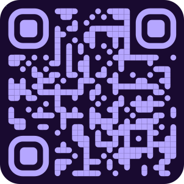

Actividad 1: El Detective Digital
Conectando el mundo visible con el invisible.
🎯 Objetivo de la Actividad:
Utilizar la aplicación de Realidad Aumentada para descubrir que el hielo, el agua líquida y el vapor están compuestos por la misma partícula fundamental (H₂O).
📖 Escenario en el Aula:
El docente presenta tres "pistas" en una mesa: un cubo de hielo, un vaso de agua y una imagen de vapor. La pregunta es: "¿Qué tienen en común estos tres elementos?"
- Los estudiantes forman hipótesis en grupos.
- Usando una tablet con la app Delightex, escanean el siguiente código QR.
- La app revela un modelo 3D de la molécula de agua.
- Los estudiantes concluyen que la única diferencia entre las pistas es la energía y el espaciado de estas moléculas.
📱 Recurso de Realidad Aumentada:
Escanea este código con la aplicación para revelar la partícula secreta.
